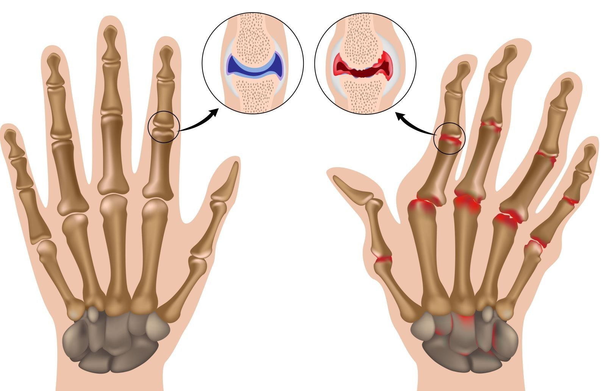

Zdjęcia: EAST NEWS
Zdjęcia: EAST NEWS
W ciągu ostatnich 20 lat liczba osób cierpiących na choroby stawów prawie się podwoiła, a średni wiek osób dotkniętych chorobą spadł do 24 lat. Winą jest siedzący tryb życia współczesnych ludzi, palenie tytoniu, wysoki poziom stresu i złe odżywianie. Zapalenie stawów jest poważną chorobą, która może sprawić, że osoba będzie niepełnosprawna w ciągu kilku lat. Jak chronić się przed wózkiem inwalidzkim i leczyć choroby stawów na zawsze?

Objawy zapalenia stawów
Zapalenie stawów ma wiele objawów:
- Chrupnięcia w stawach
- Ciężkość ruchów
- Tkliwość kości
- Napięcie pleców
- Bóle stawów przy zmianie pogody
- Uczucie sztywności
- Ogólna słabość ciała
- Obrzęk lub powiększenie stawu

Zapalenie stawów: co to jest?
Mechanizm zapalenia stawów jest stosunkowo prosty i od dawna zbadany. Choroba często występuje, gdy patogeny dostają się do organizmu. W takim przypadku wyzwala się naturalna odpowiedź immunologiczna, która tłumi infekcję. Z powodu awarii w systemie ochronnym odporność może niszczyć zarówno obce komórki, jak i własną tkankę chrzęstną.
Czy innowacje pomogą?
W marcu 2019 r. naukowcy z japońskiego uniwersytetu w Osace opublikowali oświadczenie na temat nowego leczenia zapalenia stawów - immunoterapii. Immunoterapia pomaga ciału walczyć tylko z infekcjami bez niszczenia własnych stawów. Niestety nie jest odpowiedni dla wszystkich. Jego koszt jest bardzo wysoki i nie zawsze daje wynik. Jest jeszcze jedna poważna wada immunoterapii: jeśli nie dopasować odpowiednio leczenia, może to spowodować całkowite zniszczenie tkanki stawowej. Wiele osób z artrozą stało się niepełnosprawne z powodu immunoterapii. Ich ciało tego nie dostrzegło.

Alternatywa immunoterapii
Bólu nie można zignorować: zapalenie stawów nie ustępuje samoistnie. Z biegiem czasu choroba postępuje i będzie znacznie trudniejsza do wyleczenia niż we wczesnych stadiach. Ponadto nie można znieść tego bolącego bólu, uniemożliwi to cieszenie się życiem, pracą, a nawet spaniem.
Bólu nie można zignorować: zapalenie stawów nie ustępuje samoistnie. Z biegiem czasu choroba postępuje i będzie znacznie trudniejsza do wyleczenia niż we wczesnych stadiach. Ponadto nie można znieść tego bolącego bólu, uniemożliwi to cieszenie się życiem, pracą, a nawet spaniem.
Światowa Organizacja Zdrowia, w ramach projektu „Zdrowe życie”, wspólnie z lekarzami z Japonii opracowała innowacyjny lek na zapalenie stawów. Ten środek blokuje agresywną reakcję ciała na stawy, znieczula i nie szkodzi zdrowiu.
Kilka miesięcy temu nowość pojawiła się na półkach aptek, ale inni producenci zaczęli ją wypierać: ten środek jest tańszy i bardziej skuteczny i może zmniejszyć sprzedaż innych leków na leczenie stawów.
Projekt produkcji leków został ponownie uruchomiony, zespół pracowniczy został uzupełnieniony i postanowiono wdrożyć lek przez Internet, aby ludzie nie stali już w kolejkach w aptekach.

Leczenie zapalenia stawów bez konsekwencji
Dzisiaj – jest jedynym środekiem, który może zatrzymać procesy zapalne w stawach i znieczulić bez skutków ubocznych.
ma działanie lecznicze na stawy, łagodzi obrzęki i ból. W swoim składzie posiada olej z wątroby rekina, który jest jednym z kluczowych składników, ma właściwości lecznicze na ciele ze względu na zawarte w nim składniki alkoksyglicerydowe. Zapewniają stymulację energetyczną organizmu, przyczyniają się do gojenia tkanki kostnej. W połączeniu z olejem eukaliptusowym, ekstraktem z żeń-szenia i propolisu olej z wątroby rekina pomaga złagodzić objawy zapalenia stawów i poczuć się znacznie lepiej.
Aby osiągnąć najlepszy efekt, musisz użyć kilka razy dziennie i angażować się w małą aktywność fizyczną. Możesz chodzić, ile chcesz, na świeżym powietrzu, pływać, uprawiać aerobik lub tańczyć i cokolwiek chcesz. Naukowcy twierdzą, że to ten krem może stać się wiodącym lekarstwem na zapalenie stawów.

Dzisiaj jest jednym z najlepszych lekarstw na leczenie zapalenia stawów. produkowany jest tylko w Japonii, ale lekarze planują wprowadzić sprzedaż na całym świecie. Do tego czasu specjaliści sprzedają krem dwa razy taniej niż planowano. Gdy tylko będą mogli sprzedawać krem na całym świecie, podniosą cenę. Lekarze nie zapewnią globalnych dostaw, jeśli będą tak tanio sprzedawać , będzie to po prostu nieopłacalne. Pozostało bardzo mało czasu, aby kupić w rekordowo niskiej cenie.


Komentarze:
Niedawno zamówiłem , a kilka dni później paczka była w moim domu! Tak szybko, że nawet nie dostarczają przesyłek ekspresowych, dzięki!
Mówicie poważnie? Tylko posmarować kremem i to wszystko, nie będzie żadnych problemów?
Julie, faktem jest, że ratuje nawet najbardziej beznadziejne przypadki. Krem wciera się aż do całkowitego wchlonięcia, dobrze znieczula i dobrze leczy. To jest znacznie lepsze niż tona tabletek, zastrzyków i zakraplaczy. Spróbuj powinno pomóc, mówię ci jako specjalista!
Podoba mi się . Być może zamówię więcej!
Kupowałem dla mamy. Przed nawet wstać n nogi było problemem: jej stawy były spuchnięte, a skóra w ich pobliżu była gorąca. Jak bardzo była udręczona! Gdy tylko zaczęliśmy używać , matka na ogół zapomniała, ile ma lat. Nogi nie bolą, ręce są w porządku, robi swoje własne ulubione przedszkole w domu z wnukami! Ale ona ma już 80 lat!
Fajny artykuł!
Wstałem po jednym kursie ! Każdy, kto martwi się, że ten krem to kompletna bzdura, wtedy dużo straci, powiem wam!
Ciekawe, można spróbować
Wszyscy nie wierzą, a ja już zdążyłam dziecko urodzić! :) :) Martwiłam się, że bolesne stawy skomplikują moją ciążę i dlatego nie mogłam zdecydować się na dziecko, ale zegar tykał :( :( próbowałam wszystkiego: zarówno leków hormonalnych, jak i tych niefortunnych zastrzyków, i ile tabletek wypiłam, nic nie pomogło! A potem koleżanka poradziła krem i wszystko, dosłownie po jednym kursie poczułam się lepiej, a w następnym miesiącu zaczęliśmy czekać na dziecko :) :) Oto trochę odpocznę i będziemy się starać o drugiego, póki zdrowie pozwala!
Tak, dzieci to szczęście, a wnuki to szczęście podwójnie! Teraz moje dzieci zostawiają ze mną wnuków na dłużej i cieszę się, po roku sama czuję się młoda, jakbym nie był ich babcią, a tylko ich matką!!
MAKSIMS
Spróbuję wziąć dla mamy, mam nadzieję, że to pomoże
Jose Alberto
Cieszę się, że zacząłem żyć bez bólu! Dziękuję! Planuję jeździć na nartach z moimi córkami zimą, zanim bym się nawet pomyśliał o aktywności fizycznej, ale tutaj mam szczęście że mam